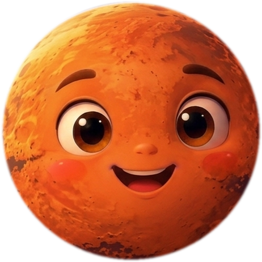
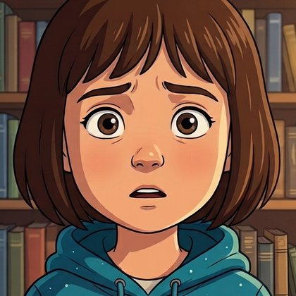

1 / 16


A children’s story for the NASA Space Apps Challenge 2026
“Abandoned but not Forgotten”
A story made after using NASA data
Facts and original photos: NASA/JPL-Caltech. Illustrations: AI-generated (Gemini), based on NASA images. Voices: AI-generated (ElevenLabs). Code: AI-assisted. The TV news and the robots’ and characters’ voices are a dramatization. This project is independent and is not endorsed by NASA.